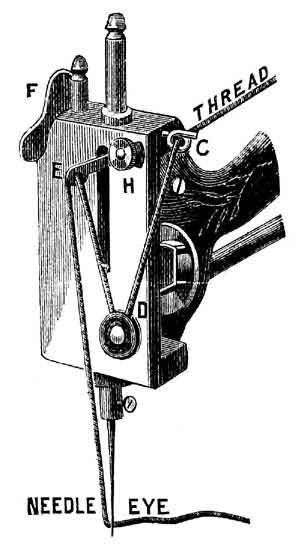
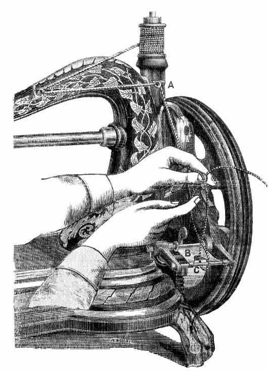
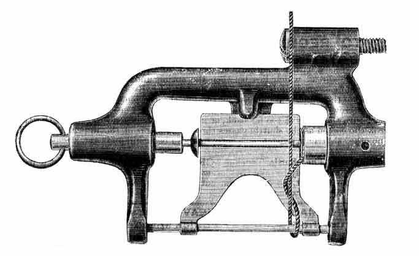

INSTRUCTIONS FOR OPERATING THE
HAND
SEWING MACHINE
~~~~~~~~~~~~~~~~~~~~~~~~~~~~~~~~
Jones' Sewing Machine Co. Limited,
GUIDE BRIDGE,
Near Manchester.
The following table indicates the sizes of the Threads and Needles which should be employed together: -
| Size
of Needles |
Unglace
Cotton |
Kinds
of Work |
| 0
and 1 |
80
to 100 |
Finest
Work, Muslins and Linens, Handkerchiefs, Shirts, Fronts, &c. |
| 1
and 1-1/2 |
50
to 80 |
Baby
Linen, &c., Silk and Mantle Cloths, Dressmaking and Quilting. |
| 2 |
20
to 40 |
Mantle
Cloths |
Always use SOFT COTTON in the Shuttle.
SETTING THE NEEDLE
Raise the needle-bar to its highest point; place the shank of the needle up into the hole in the lower end of the needle-bar, and fasten it firmly with the screw near lower end of the needle-bar.
Be careful that the short groove is next to the shuttle or right-hand side, and the long groove on the opposite or left-hand side.
The operator will observe a mark on the needle-bar, and when this mark is level with the top of the head of the Machine, the eye of the needle should be exactly level with the cloth-plate.
Note particularly that the needle goes down the centre of the needle-hole in the cloth-plate: if inclined on one side, spring or bend the needle until it descends in the centre of the needle-hole. This is important and will prevent breaking needles and missing stitches.
If the needle point gets blunted or turned over by striking on the shuttle or needle-plate, the Machine will miss stitches. By all means change the needle, as you cannot possibly do nice work unless the needle point is perfectly sharp.
THREADING THE MACHINE
| Upon the spool pin place the spool so that it will turn perfectly free; pass the thread from the spool through the eye C at the top of the arm, then downwards under and between the tension discs as shown D, upwards through the eye of the eye of the check lever E, and lastly through the eye of the needle, the thread running from left to right.
|
 |
ADJUSTING THE NEEDLE THREAD TENSION
Be sure you lower the presser foot F before attempting to adjust the needle thread tension. The needle or top thread tension is adjusted by means of the milled head nut H. By turning the nut H towards the operator the tension is increased, and by turning the nut H away from the operator, the tension is decreased. Before commencing to sew be sure and see that the top tension is not too slack; if it is too slack, the thread will wind and tangle round the shuttle.
TO WIND THE SHUTTLE BOBBIN
|
NOTE: Be sure you keep the inside of the Balance or Fly Wheel (where the leather pulley is driven from) thoroughly clean and free from oil, and the Spool Winder Spindle nicely oiled, or the Spool Winder may not wind freely.
To operate this truly valuable arrangement, first disconnect the Balance or Fly-wheel by drawing out the bolt and turning it round a quarter of a time.
The Fly-wheel will then run loose on the shaft and the machine remain stationary. After winding the Fly-wheel will again connect itself instantly by simply turning the bolt, so as to allow the spring to draw it into its place.
Be careful to fix the end of the thread between the brass end of the shuttle bobbin and the hollow cup of winder spindle. See Illustration. |
 |

View of Spool Winder showing correct position of thread before commencing to wind.
These two Illustrations show exactly how to wind the Shuttle Bobbin.